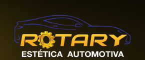

Lavagem padrão
Limpeza interna, aspiração de carpetes e bancos, hidratação dos plásticos e proteção UV.
A partir de R$ 100

Escolher horárioESTÉTICA AUTOMOTIVA · MOGI DAS CRUZES
Excelência em cada detalhe do seu carro. Conheça os cuidados da Rotary e experimente uma nova forma de agendar.
 Imagem do catálogo da Rotary
Imagem do catálogo da RotaryUM CUIDADO PARA CADA NECESSIDADE
Serviços apresentados no catálogo da Rotary.
Escolha seu cuidado e explore o agendamento.
Limpeza interna, aspiração de carpetes e bancos, hidratação dos plásticos e proteção UV.
Lavagem técnica, limpeza interna a vapor, oxi-sanitização e finalização com cera Blend.
Polimento, vitrificação, cristalização dos vidros e restauração de faróis. Consulte o catálogo.
| Serviço | Hatch | Sedan | SUV | Extra grande |
|---|---|---|---|---|
| Lavagem padrão | R$ 100 | R$ 100 | R$ 115 | R$ 150 |
| Lavagem detalhada | R$ 250 | R$ 250 | R$ 280 | R$ 300 |
Preços de referência do catálogo disponibilizado pela Rotary. Variam conforme o porte do veículo e precisam ser confirmados pela equipe. Serviços e horários desta demonstração não representam disponibilidade real.
MENOS MENSAGENS. MAIS PRATICIDADE.
Escolha o serviço, encontre um horário e veja como os dados chegam organizados ao WhatsApp.
Esta é uma simulação. Não bloqueia horários na Rotary e não envia mensagens automaticamente. Use dados fictícios.
ROTARY · VILA MOGILAR
Av. José Benedito Braga, 145
Vila Mogilar · Mogi das Cruzes – SP
WhatsApp: (11) 94501-3505